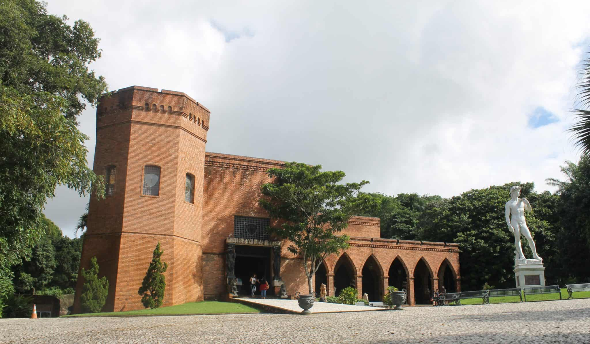

O que é o Instituto Ricardo Brennand?
O Instituto Ricardo Brennand é um espaço cultural sem fins lucrativos inaugurado em 2002, que salvaguarda um valioso acervo artístico e histórico originário da coleção particular do industrial pernambucano Ricardo Coimbra de Almeida Brennand. Tem como missão a preservação, a difusão e o acesso à cultura e herança material e imaterial, 7 visando a promoção do capital humano e cultural. Localizado nas terras do antigo engenho São João, no bairro da Várzea, ocupa uma área de 77.603 m² cercada por uma reserva de mata atlântica preservada. Possui uma das mais modernas instalações museológicas do Brasil, abrangendo um complexo de edificações constituído pelo Museu Castelo São João (museu de armas brancas), Pinacoteca, Biblioteca, Auditório, Jardins das Esculturas e uma Galeria para exposições temporárias e eventos.
Imagens Instituto Ricardo Brennand
Uma imagem deslumbrante do Instituto Ricardo Brennand.
Visite o Instituto Ricardo Brennand
Para visitar o Instituto Ricardo Brennand, basta ir nas terras do antigo engenho São João.